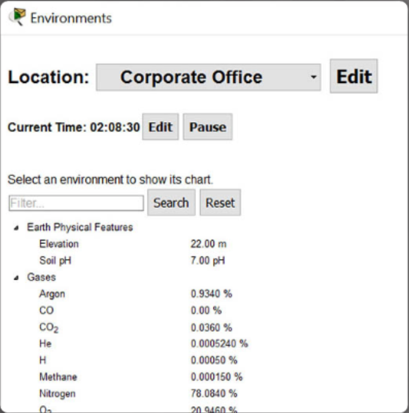
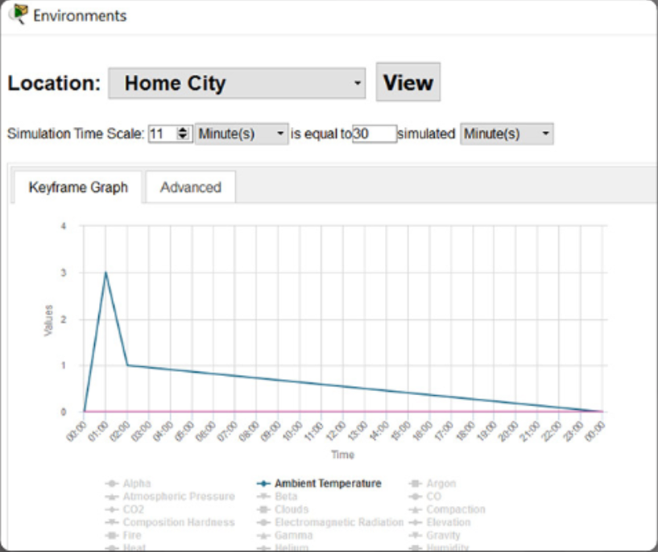
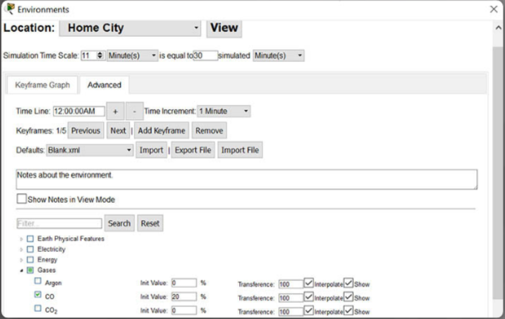

Packet tracer Environment Controls.
In this chapter, you will learn:
- The environmental controls that are available in Packet Tracer.
- How to configure environmental controls within containers.
- How smart devices interact with the Packet tracer environmental elements.
- How to adjust environmental elements.
- How to set conditions and take action
Environmental Controls available in Packet Tracer.
In the Physical workspace there are containers. Each container, the intercity, city, buildings and wiring closets, all have their own set of environmental values. There are 24 default environmental elements, such as temperature, rain,
water level, wind speed and snow. Many devices or Things effect or respond to the environment in some way. A Fire Sprinkler will raise the water level and humidity in a container. An old car will increase various gases and ambient temperature
when turned on. A smoke detector cab be used to trigger an alarm when the smoke in environment increases to a certain point.
If there are no devices configured to affect the environment, their values are looped on a 24-hour cycle. For example, the sun will come up at 6pm. The ambient temperature will peak at 25ºC at noon(medidía). This cycle is set on the intercity
level and its ambient temperature range will propage all the way down to the main wiring closet automatically. If a heater is added to the Corporate Office and turned on, the temperature inside the Corporate Office will increase along with all the containers within it.
Note however, the heater does not heat up the parent container, Hom City, it will only heat up the child containers.
When the heater is turned off , the Corporate Office will eventually converge to the parent container's ambient temperature, Home City, based on its transference values determine the rate that the child container converges with the parent container and works the same way
for all enviroment types.
Configuring the Environment using Containers.
Important terms and concepts:
-
• Current time – time inside a container that increments by 30 minute increments. Every 1 second in real time equates to 30 minutes in “Container” time. The timer goes from 0 (midnight) to 11:59. (Figure).

• KeyFrame – represents a single moment in time
• KeyFrame graph – A graph that shows the value of environmental elements at any given point in time throughout the day. (Figure).

• Transference - values that determine the rate that the child container converges with the parent container and works the same way for all environment types.
-
1. Select Environmental from the top right hand corner of the Physical view.
2. Select the appropriate container location.
3. Modify the time, if required.
4. Select Environmental Values/Edit – a keyframe graph will appear.
5. Select the Advanced tab and modify the required environmental conditions using the dropdown boxes as required.
Note: Remember to hit enter after modifying a value to add that value. (Figure).

6. The modified values will be reflected immediately in the keyframe graph.
7. You can also manipulate the graph by dragging the timeline to modify the time and value of a particular environmental value.
Packet tracer - Modify and Monitor Environmental Controls in Packet Tracer.
Modify and Monitor Environment Controls Instructions
Environmental Controls Packet Tracer File
Chapter 7: Packet Tracer Environment Controls
At the completion of this chapter, you should be able to:
- Describe the types of environmental controls that are available in Packet Tracer.
- Configure environmental controls within containers.
- Explain how smart devices interact with the Packet Tracer environmental elements.
- Adjust environmental elements.
- Set conditions so that IoT devices will take action.